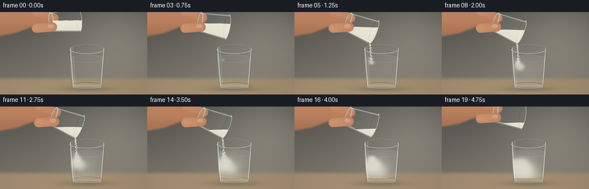
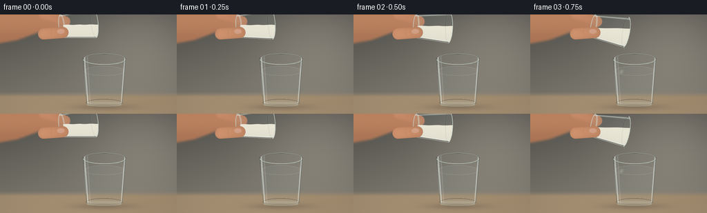
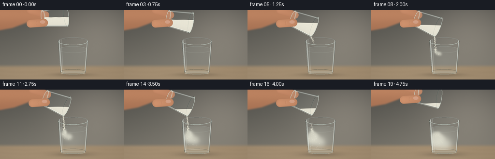

CODING AGENTS AS PIXEL WORLD MODELS
traex/GPT-6.1-Sol · material_0019
点击播放 · 原生 RGB 像素
逐轮保存的候选
回放视频、检查图与代码变化。
每份候选均可单独播放。实际图片检查记录在下方工具轨迹中。
候选 01播放与检查图
点击播放 · 原生 RGB 像素


展开代码变化
--- 上一保存版本
+++ 本次保存版本
@@ -0,0 +1,350 @@
+"""Text-only, deterministic, supersampled RGB animation of flour poured into water.
+
+All geometry, optical effects, particles and shading are generated locally with
+numpy and Pillow. Run this file to regenerate the complete deliverable.
+"""
+from pathlib import Path
+import math
+import json
+import numpy as np
+from PIL import Image, ImageDraw, ImageFilter
+import artifact_io
+
+ROOT = Path(__file__).resolve().parent
+SPEC = json.loads((ROOT / 'task_spec.json').read_text())
+W, H, SS = SPEC['width'], SPEC['height'], 3
+SW, SH = W * SS, H * SS
+Y, X = np.mgrid[:SH, :SW].astype(np.float32) / SS
+rng = np.random.default_rng(9032)
+NOISE = rng.normal(0, 1, (SH, SW)).astype(np.float32)
+
+
+def smooth(a):
+ a = np.clip(a, 0, 1)
+ return a * a * (3 - 2 * a)
+
+
+def overlay(im, color, alpha):
+ a = np.clip(alpha, 0, 1)[..., None]
+ im[:] = im * (1 - a) + np.asarray(color, dtype=np.float32) * a
+
+
+def mask_polygon(points, blur=0):
+ m = Image.new('L', (SW, SH))
+ ImageDraw.Draw(m).polygon([(x * SS, y * SS) for x, y in points], fill=255)
+ if blur:
+ m = m.filter(ImageFilter.GaussianBlur(blur * SS))
+ return np.asarray(m, dtype=np.float32) / 255
+
+
+def stroke(im, points, color, width=1, alpha=1):
+ layer = Image.new('RGBA', (SW, SH))
+ ImageDraw.Draw(layer).line([(x * SS, y * SS) for x, y in points],
+ fill=tuple(int(c) for c in color) + (int(alpha * 255),),
+ width=max(1, int(width * SS)), joint='curve')
+ ar = np.asarray(layer, dtype=np.float32)
+ overlay(im, ar[..., :3], ar[..., 3] / 255)
+
+
+def ellipse_arc(im, cx, cy, rx, ry, color, width, alpha, start=0, end=2*math.pi):
+ ts = np.linspace(start, end, 130)
+ stroke(im, list(zip(cx + rx * np.cos(ts), cy + ry * np.sin(ts))),
+ color, width, alpha)
+
+
+def capsule_mask(ax, ay, bx, by, radius):
+ dx, dy = bx - ax, by - ay
+ u = np.clip(((X - ax) * dx + (Y - ay) * dy) / (dx * dx + dy * dy), 0, 1)
+ dist = np.hypot(X - (ax + u * dx), Y - (ay + u * dy))
+ return smooth((radius + .35 - dist) / .7), u, dist
+
+
+def background():
+ light = np.exp(-((X - 209) / 99)**2 - ((Y - 32) / 88)**2)
+ vertical = np.clip(Y / 125, 0, 1)
+ im = np.empty((SH, SW, 3), np.float32)
+ for k, (a, b) in enumerate([(83, 136), (82, 127), (77, 111)]):
+ im[..., k] = a + b * .30 * vertical + light * (35 - k * 3)
+ # A diffuse, far-out-of-focus wall and a real-sized tabletop.
+ horizon = smooth((Y - 111) / 10)
+ grain = 1.05 * np.sin(Y * 2.4 + 2 * np.sin(X * .033))
+ grain += .65 * np.sin(Y * 6.5 + X * .037) + .25 * NOISE
+ table = np.empty_like(im)
+ for k, c in enumerate([165, 143, 114]):
+ table[..., k] = c + (Y - 118) * .13 + grain - .018 * (X - 130)
+ overlay(im, table, horizon)
+ vignette = 1 - .085 * ((X - 136)**2 / 170**2 + (Y - 71)**2 / 120**2)
+ im *= vignette[..., None]
+ im += NOISE[..., None] * .34
+ shadow = np.exp(-((X - 150) / 40)**2 - ((Y - 134) / 4.5)**2)
+ overlay(im, (63, 56, 46), shadow * .30)
+ return im
+
+
+CX, TOP, BOT = 151., 65., 127.
+RX, RB, EY = 31., 26., 8.
+rr = RX + (RB - RX) * np.clip((Y - TOP) / (BOT - TOP), 0, 1)
+body = smooth((rr - np.abs(X - CX) + .35) / .7)
+body *= smooth((Y - (TOP - EY) + .4) / .8)
+body *= smooth((BOT + 5.0 * np.sqrt(np.clip(1 - ((X - CX) / RB)**2, 0, 1)) - Y) / .65)
+# An open cylinder's visible projected silhouette begins at the back lip.
+top_curve = TOP - EY * np.sqrt(np.clip(1 - ((X - CX) / RX)**2, 0, 1))
+body *= smooth((Y - top_curve + .35) / .7)
+waterline = 82.
+water_curve = waterline - 6.8 * np.sqrt(np.clip(1 - ((X - CX) / 29.5)**2, 0, 1))
+watermask = body * smooth((Y - water_curve) / .8)
+watermask *= smooth((125.8 - Y) / 1.2)
+
+
+def receiver_back(im, t):
+ # Transmission with a small refractive lateral displacement at each wall.
+ old = im.copy()
+ shift = (4.8 * ((X - CX) / np.maximum(rr, 1))**5 * SS).astype(np.int32)
+ ix = np.clip(np.arange(SW)[None, :] + shift, 0, SW - 1)
+ refracted = old[np.arange(SH)[:, None], ix]
+ overlay(im, refracted * .97 + np.array([3, 5, 6]), body * .47)
+ overlay(im, (177, 195, 193), watermask * .07)
+ # Back rim, with uneven studio highlights rather than an opaque outline.
+ ellipse_arc(im, CX, TOP, RX, EY, (61, 66, 62), .95, .6, math.pi, 2*math.pi)
+ ellipse_arc(im, CX, TOP-.45, RX-.7, EY-.35, (217, 229, 226), .65, .77,
+ math.pi*1.08, math.pi*1.92)
+ ellipse_arc(im, CX, waterline, 29.2, 6.8, (195, 213, 207), .45, .47,
+ math.pi, 2*math.pi)
+ # Bottom lens magnifies and brightens the countertop beneath it.
+ base = np.exp(-((Y - 128.6) / 3.0)**2) * smooth((RB - abs(X-CX)) / 1.4)
+ overlay(im, (194, 193, 176), base * .48)
+ ellipse_arc(im, CX, 128, 26, 5.2, (75, 79, 70), .9, .65)
+ ellipse_arc(im, CX, 129.1, 24.7, 3.5, (224, 227, 210), .65, .63, 0, math.pi)
+
+
+# Brownian, billowing clumps of flour. The same emission schedule is used for
+# every frame, so the cloud grows continuously instead of being re-randomized.
+emit_times = np.linspace(.72, 3.62, 105)
+cloud_params = []
+for birth in emit_times:
+ cloud_params.append((birth, rng.uniform(-1, 1), rng.uniform(9, 14),
+ rng.uniform(-1, 1), rng.uniform(.5, 1.7), rng.uniform(0, 6.28)))
+
+
+def underwater_flour(im, t, impact_x):
+ density = np.zeros((SH, SW), np.float32)
+ # Fields are evaluated only inside the small bounding boxes of the blobs.
+ for birth, side, speed, drift, seedsize, phase in cloud_params:
+ age = t - birth
+ if age < 0:
+ continue
+ cx = 132.5 + side * (1.0 + 4.7 * age) + age * 2.3
+ cx += math.sin(age * 2.0 + phase) * min(age, 1.0) * 2.2
+ cy = waterline + 1.4 + speed * age - 1.0 * age * age
+ cy = min(cy, 122.0)
+ sx = seedsize + 1.9 * age
+ sy = 1.4 + 1.7 * age
+ x0, x1 = max(0, int((cx - sx * 3) * SS)), min(SW, int((cx + sx * 3) * SS)+1)
+ y0, y1 = max(0, int((cy - sy * 3) * SS)), min(SH, int((cy + sy * 3) * SS)+1)
+ xx, yy = X[y0:y1, x0:x1], Y[y0:y1, x0:x1]
+ g = np.exp(-.5 * (((xx - cx) / sx)**2 + ((yy - cy) / sy)**2))
+ density[y0:y1, x0:x1] += g * (.15 / (1 + age * .12))
+ amount = smooth((t - .7) / 3.0)
+ # The mixed suspension retains translucency; lobes stay individually legible.
+ broad = np.exp(-((X - 146) / 27)**2 - ((Y - 105) / 25)**2)
+ density += broad * amount * .31
+ opacity = (1 - np.exp(-density * 1.25)) * watermask
+ d_y = np.gradient(density, axis=0) * SS
+ d_x = np.gradient(density, axis=1) * SS
+ shading = np.clip(-d_y * 12 - d_x * 9, -17, 15)
+ color = np.empty_like(im)
+ for k, c in enumerate([229, 228, 212]):
+ color[..., k] = c + shading + NOISE * .38
+ overlay(im, color, opacity * .88)
+ # A few small, suspended undissolved grains and settling flecks.
+ layer = Image.new('RGBA', (SW, SH))
+ dr = ImageDraw.Draw(layer)
+ for j, (birth, side, speed, drift, seedsize, phase) in enumerate(cloud_params[::2]):
+ age = t - birth
+ if age <= 0 or age > 3:
+ continue
+ xx = 132 + side * (2 + age * 5) + age * 2
+ yy = min(123, 84 + speed * age * 1.1)
+ if 121 < xx < 178:
+ r = .19 + (j % 3) * .06
+ dr.ellipse(((xx-r)*SS,(yy-r)*SS,(xx+r)*SS,(yy+r)*SS),
+ fill=(243, 240, 219, int(160 / (1+age*.3))))
+ ar = np.asarray(layer, np.float32)
+ overlay(im, ar[..., :3], ar[..., 3] / 255 * watermask)
+ settled = np.exp(-((Y - 123.5) / 1.1)**2) * np.exp(-((X - 141)/19)**2)
+ overlay(im, (222, 216, 197), settled * smooth((t-2.1)/2.5) * .56 * body)
+
+
+def receiver_front(im, t):
+ z = (X - CX) / rr
+ # Long reflected softboxes and faint opposite-side negative-fill reflections.
+ left_shine = np.exp(-((z + .925) / .039)**2) * .58
+ inner_shine = np.exp(-((z + .79) / .026)**2) * .18
+ right_shine = np.exp(-((z - .955) / .026)**2) * .62
+ overlay(im, (235, 243, 237), (left_shine + inner_shine + right_shine) * body)
+ darkedge = (np.exp(-((z + .992)/.017)**2) + np.exp(-((z-.995)/.016)**2))
+ overlay(im, (55, 65, 61), darkedge * body * .6)
+ # Two slim interrupted highlights create the optical thickness of the wall.
+ stroke(im, [(122,73),(122.8,95),(124.4,116)], (244,246,236), .65, .53)
+ stroke(im, [(178.7,76),(177.3,104),(175.1,122)], (242,243,222), .5, .5)
+ ellipse_arc(im, CX, TOP, RX, EY, (83, 91, 84), .75, .56, 0, math.pi)
+ ellipse_arc(im, CX, TOP-.25, RX-.45, EY-.1, (225,235,224), .70, .72, .10, 3.05)
+ ellipse_arc(im, CX, TOP+.65, RX-1.2, EY-.55, (157,172,163), .38, .56, .08, 3.06)
+ # Water's near meniscus is visible below the open, empty headspace.
+ ellipse_arc(im, CX, waterline, 29.15, 6.5, (198,212,198), .48, .37, 0, math.pi)
+ ellipse_arc(im, CX, 130, 25.2, 3.25, (225,228,208), .65, .75, .3, 2.83)
+ if .78 < t < 3.9:
+ strength = min(1, (t-.78)*3) * min(1, (3.9-t)*3)
+ for j in range(2):
+ rad = 2 + ((t*9+j*3)%7)
+ ellipse_arc(im, 132.5, 81.9, rad, rad*.28, (232,234,218), .35,
+ .23*strength, .2, 2.95)
+
+
+def source_pose(t):
+ angle = 84 + 28 * smooth(t / 1.35) - 13 * smooth((t-3.7)/1.05)
+ theta = math.radians(angle)
+ u = np.array([math.sin(theta), -math.cos(theta)])
+ v = np.array([math.cos(theta), math.sin(theta)])
+ base = np.array([89.0 + 4 * smooth(t/1.3), 17.0 - 7 * smooth((t-3.9)/.9)])
+ return base, u, v
+
+
+def hand_back(im, t, base):
+ dx, dy = base[0]-89, base[1]-17
+ p = [(-8,-8),(69,-8),(83,-2),(93,6),(96,17),(87,26),
+ (70,26),(57,25),(44,30),(25,37),(-8,43)]
+ m = mask_polygon([(x+dx,y+dy) for x,y in p], 1.5)
+ shade = 9*np.exp(-((Y-12-dy)/14)**2) - .32*(Y-dy) + NOISE*.6
+ col = np.stack([181+shade,125+shade*.78,92+shade*.58],axis=-1)
+ overlay(im, col, m)
+ # Rear index finger, partly hidden behind the glass's base.
+ m, unit, dist = capsule_mask(63+dx, 0+dy, 94+dx, 10+dy, 7.7)
+ shading = 15 * np.sqrt(np.clip(1-(dist/7.9)**2,0,1)) - 8*unit
+ overlay(im, np.stack([184+shading,126+shading*.83,94+shading*.65],axis=-1), m)
+
+
+def source_glass(im, t, base, u, v):
+ length, r0, r1, depth = 48., 16.7, 21.8, 5.5
+ px, py = X - base[0], Y - base[1]
+ s, q = px*u[0]+py*u[1], px*v[0]+py*v[1]
+ radius = r0 + (r1-r0)*np.clip(s/length,0,1)
+ barrel = smooth((radius-abs(q)+.3)/.65)*smooth((s+.1)/.55)*smooth((length-s+.2)/.55)
+ bottom = smooth((1-((q/r0)**2+(s/3.8)**2))/.10)
+ mouth = smooth((1-((q/r1)**2+((s-length)/depth)**2))/.08)
+ glass = np.maximum(barrel,np.maximum(bottom,mouth))
+ overlay(im, (165,185,183),glass*.09)
+ def world(ss, qq):
+ p=base+u*ss+v*qq
+ return tuple(p)
+ def ring(ss, rq, ds, color, width, alpha, a=0,b=2*math.pi):
+ th=np.linspace(a,b,110)
+ pts=[world(ss+ds*math.sin(k),rq*math.cos(k)) for k in th]
+ stroke(im,pts,color,width,alpha)
+ ring(length,r1,depth,(67,76,72),.8,.67,math.pi,2*math.pi)
+ # Conserved powder volume leaves a visibly lower fill level as it is poured.
+ frac=.56-.44*smooth((t-.6)/3.1)
+ # Compute a horizontal free surface from the projected interior volume.
+ inside = (barrel > .9) & (s>3) & (s<length-1) & (abs(q)<radius-1.3)
+ levels = Y[inside]
+ cut = float(np.quantile(levels, 1-frac)) if len(levels) else 20.
+ mound=.65*np.sin(q*.17+t*.15)+.24*np.sin(q*.71+s*.3)
+ powder=glass*smooth((Y-cut+mound)/.65)
+ powder*=smooth((radius-1.1-abs(q))/.7)*smooth((s-2)/.8)
+ grain=(np.sin(q*28.1+s*17.8)*np.sin(q*16.9-s*24.3))
+ shade=-8*(q/radius)**2 + 2.4*grain + NOISE*.38
+ shade+=5*np.exp(-((Y-cut)/1.2)**2)
+ cream=np.stack([235+shade,232+shade,216+shade*.9],axis=-1)
+ overlay(im,cream,powder*.98)
+ # Fine granular contours on the flour's free surface, no liquid-like shine.
+ flecks=powder*np.clip((grain-.75)*5,0,1)*.17
+ overlay(im,(181,172,153),flecks)
+ nearwall=np.exp(-((q/radius-.91)/.035)**2)+np.exp(-((q/radius+.9)/.047)**2)
+ overlay(im,(234,243,236),nearwall*glass*.5)
+ stroke(im,[world(1,-r0),world(length,-r1)],(76,84,77),.65,.47)
+ stroke(im,[world(1,r0),world(length,r1)],(227,234,220),.9,.72)
+ stroke(im,[world(4,r0-2),world(42,r1-2.2)],(246,248,233),.7,.5)
+ ring(0,r0,3.8,(202,216,208),1.2,.74)
+ ring(2,r0-1,3,(242,245,228),.65,.77,0,math.pi)
+ ring(length,r1,depth,(227,238,228),.9,.78,0,math.pi)
+ ring(length,r1-.9,depth-.65,(147,166,155),.5,.54)
+ # The low edge of the mouth is the physical origin of the falling flour.
+ lip=base+u*length+v*(r1-1)
+ return lip
+
+
+def thumb_front(im, t, base):
+ dx,dy=base[0]-89,base[1]-17
+ m, unit, dist=capsule_mask(63+dx,28+dy,91+dx,26+dy,8.1)
+ shading=16*np.sqrt(np.clip(1-(dist/8.1)**2,0,1))-10*unit+NOISE*.45
+ overlay(im,np.stack([191+shading,133+shading*.8,99+shading*.64],axis=-1),m)
+ # Small oblique thumbnail, with a soft rounded shape and subtle lunula.
+ nx,ny=88+dx,24.4+dy
+ nail=smooth((1-((X-nx)/5.7)**2-((Y-ny)/3.75)**2)/.16)
+ nail*=m
+ ns=3*np.exp(-((Y-ny+1)/2)**2)
+ overlay(im,np.stack([210+ns,162+ns,138+ns],axis=-1),nail*.8)
+ stroke(im,[(75+dx,23+dy),(74.3+dx,27+dy),(75+dx,30+dy)],(139,88,66),.45,.27)
+ stroke(im,[(77+dx,24+dy),(76.5+dx,28+dy)],(236,176,135),.4,.28)
+
+
+def falling_flour(im, t, lip):
+ if not .66 < t < 3.9:
+ return
+ flow=smooth((t-.66)/.35)*(1-smooth((t-3.45)/.45))
+ if flow<=0:
+ return
+ # Slightly broad granular stream, broken into gravity-accelerated packets.
+ layer=Image.new('RGBA',(SW,SH))
+ dr=ImageDraw.Draw(layer)
+ for j in range(120):
+ birth=.66+j/32
+ age=t-birth
+ if age<0 or age>.9 or birth>3.65:
+ continue
+ yy=lip[1]+2+11*age+65*age*age
+ if yy>83:
+ continue
+ xx=lip[0]+1+age*4+math.sin(j*2.399)*(.55+age*1.5)
+ radius=(.40+.32*((j*37)%13)/13)*flow
+ length=.6+age*2.4
+ a=int(210*flow)
+ dr.ellipse(((xx-radius)*SS,(yy-length)*SS,(xx+radius)*SS,(yy+length)*SS),
+ fill=(242-(j%4)*3,238-(j%4)*3,220-(j%4)*3,a))
+ # Individual fine grains shed from the edges of the stream.
+ for k in range(2):
+ xx2=xx+math.sin(j*5.61+k*2)*(.9+3*age)
+ yy2=yy+math.sin(j*3.16+k)*1.3
+ r=.16+.05*(j%3)
+ dr.ellipse(((xx2-r)*SS,(yy2-r)*SS,(xx2+r)*SS,(yy2+r)*SS),
+ fill=(237,234,215,int(155*flow)))
+ ar=np.asarray(layer,np.float32)
+ overlay(im,ar[...,:3],ar[...,3]/255)
+ # Tiny pale floating aggregates where the powder first contacts the water.
+ clump=np.exp(-((X-132.3)/3.0)**2-((Y-81.0)/1.1)**2)
+ overlay(im,(235,232,213),clump*.72*flow)
+
+
+def main():
+ frames=[]
+ for i in range(SPEC['frames']):
+ t=i/SPEC['fps']
+ im=background()
+ base,u,v=source_pose(t)
+ hand_back(im,t,base)
+ receiver_back(im,t)
+ underwater_flour(im,t,132.5)
+ lip=source_glass(im,t,base,u,v)
+ thumb_front(im,t,base)
+ falling_flour(im,t,lip)
+ receiver_front(im,t)
+ image=Image.fromarray(np.uint8(np.clip(im,0,255)))
+ image=image.resize((W,H),Image.Resampling.LANCZOS)
+ frames.append(np.asarray(image))
+ frames=np.stack(frames).astype(np.uint8)
+ artifact_io.save(frames,ROOT)
+ print(f'Saved {len(frames)} RGB frames at {W}x{H}, {SPEC["fps"]} fps.')
+
+
+if __name__=='__main__':
+ main()
候选 02播放与检查图
点击播放 · 原生 RGB 像素

展开代码变化
--- 上一保存版本
+++ 本次保存版本
@@ -119,7 +119,7 @@
# Brownian, billowing clumps of flour. The same emission schedule is used for
# every frame, so the cloud grows continuously instead of being re-randomized.
-emit_times = np.linspace(.72, 3.62, 105)
+emit_times = np.linspace(.66, 3.62, 105)
cloud_params = []
for birth in emit_times:
cloud_params.append((birth, rng.uniform(-1, 1), rng.uniform(9, 14),
@@ -129,11 +129,16 @@
def underwater_flour(im, t, impact_x):
density = np.zeros((SH, SW), np.float32)
# Fields are evaluated only inside the small bounding boxes of the blobs.
- for birth, side, speed, drift, seedsize, phase in cloud_params:
+ for emission, side, speed, drift, seedsize, phase in cloud_params:
+ b, u, v = source_pose(emission)
+ lip = b + u * 48 + v * 20.8
+ flight = (-11 + math.sqrt(121 + 260 * max(0, waterline-lip[1]-2))) / 130
+ birth = emission + flight
+ contact_x = lip[0] + 1 + flight * 4
age = t - birth
if age < 0:
continue
- cx = 132.5 + side * (1.0 + 4.7 * age) + age * 2.3
+ cx = contact_x + side * (1.0 + 4.7 * age) + age * 2.3
cx += math.sin(age * 2.0 + phase) * min(age, 1.0) * 2.2
cy = waterline + 1.4 + speed * age - 1.0 * age * age
cy = min(cy, 122.0)
@@ -144,7 +149,7 @@
xx, yy = X[y0:y1, x0:x1], Y[y0:y1, x0:x1]
g = np.exp(-.5 * (((xx - cx) / sx)**2 + ((yy - cy) / sy)**2))
density[y0:y1, x0:x1] += g * (.15 / (1 + age * .12))
- amount = smooth((t - .7) / 3.0)
+ amount = smooth((t - 1.2) / 3.0)
# The mixed suspension retains translucency; lobes stay individually legible.
broad = np.exp(-((X - 146) / 27)**2 - ((Y - 105) / 25)**2)
density += broad * amount * .31
@@ -159,11 +164,15 @@
# A few small, suspended undissolved grains and settling flecks.
layer = Image.new('RGBA', (SW, SH))
dr = ImageDraw.Draw(layer)
- for j, (birth, side, speed, drift, seedsize, phase) in enumerate(cloud_params[::2]):
+ for j, (emission, side, speed, drift, seedsize, phase) in enumerate(cloud_params[::2]):
+ b, u, v = source_pose(emission)
+ lip = b + u * 48 + v * 20.8
+ flight = (-11 + math.sqrt(121 + 260 * max(0, waterline-lip[1]-2))) / 130
+ birth = emission + flight
age = t - birth
if age <= 0 or age > 3:
continue
- xx = 132 + side * (2 + age * 5) + age * 2
+ xx = lip[0] + 1 + flight * 4 + side * (2 + age * 5) + age * 2
yy = min(123, 84 + speed * age * 1.1)
if 121 < xx < 178:
r = .19 + (j % 3) * .06
@@ -193,8 +202,8 @@
# Water's near meniscus is visible below the open, empty headspace.
ellipse_arc(im, CX, waterline, 29.15, 6.5, (198,212,198), .48, .37, 0, math.pi)
ellipse_arc(im, CX, 130, 25.2, 3.25, (225,228,208), .65, .75, .3, 2.83)
- if .78 < t < 3.9:
- strength = min(1, (t-.78)*3) * min(1, (3.9-t)*3)
+ if 1.2 < t < 4.35:
+ strength = min(1, (t-1.2)*3) * min(1, (4.35-t)*3)
for j in range(2):
rad = 2 + ((t*9+j*3)%7)
ellipse_arc(im, 132.5, 81.9, rad, rad*.28, (232,234,218), .35,
@@ -289,10 +298,7 @@
def falling_flour(im, t, lip):
- if not .66 < t < 3.9:
- return
- flow=smooth((t-.66)/.35)*(1-smooth((t-3.45)/.45))
- if flow<=0:
+ if not .66 < t < 4.5:
return
# Slightly broad granular stream, broken into gravity-accelerated packets.
layer=Image.new('RGBA',(SW,SH))
@@ -302,10 +308,15 @@
age=t-birth
if age<0 or age>.9 or birth>3.65:
continue
- yy=lip[1]+2+11*age+65*age*age
+ flow=smooth((birth-.66)/.35)*(1-smooth((birth-3.45)/.25))
+ if flow <= 0:
+ continue
+ b,u,v=source_pose(birth)
+ grain_lip=b+u*48+v*20.8
+ yy=grain_lip[1]+2+11*age+65*age*age
if yy>83:
continue
- xx=lip[0]+1+age*4+math.sin(j*2.399)*(.55+age*1.5)
+ xx=grain_lip[0]+1+age*4+math.sin(j*2.399)*(.55+age*1.5)
radius=(.40+.32*((j*37)%13)/13)*flow
length=.6+age*2.4
a=int(210*flow)
@@ -322,6 +333,7 @@
overlay(im,ar[...,:3],ar[...,3]/255)
# Tiny pale floating aggregates where the powder first contacts the water.
clump=np.exp(-((X-132.3)/3.0)**2-((Y-81.0)/1.1)**2)
+ flow=smooth((t-1.2)/.4)*(1-smooth((t-3.85)/.4))
overlay(im,(235,232,213),clump*.72*flow)
可观测工具轨迹
实际执行的命令与返回图片。
命令 1exit 0
/bin/bash -lc 'ls -la && cat prompt.txt && cat GENERATION_RULES.md && cat task_spec.json'
命令 2exit 1
/bin/bash -lc "cat artifact_io.py && which ffmpeg && python - <<'PY'
import numpy,PIL
print('numpy',numpy.__version__)
PY"命令 3exit 0
/bin/bash -lc "python - <<'PY' import numpy,PIL print(numpy.__version__) PY"
命令 4exit 0
/bin/bash -lc "python generate.py && ls -lh pixels.npz index.html inspection.png transition_check.png && python - <<'PY'
import numpy as np
from PIL import Image
p=np.load('pixels.npz')['pixels']
print('Packed video shape:', p.shape, 'dtype:',p.dtype)
frames=np.stack([np.array(Image.open(f'frames/{i:02d}.png')) for i in range(20)])
print('RGB shape:',frames.shape, 'range:',frames.min(),frames.max())
print('Mean successive frame differences:',np.abs(np.diff(frames.astype(float),axis=0)).mean(axis=(1,2,3)).round(3))
PY"命令 5exit 0
/bin/bash -lc "python generate.py && python - <<'PY'
from pathlib import Path
import numpy as np
from PIL import Image
f=sorted(Path('frames').glob('*.png'))
a=np.stack([np.asarray(Image.open(p)) for p in f])
assert a.shape==(20,144,256,3) and a.dtype==np.uint8
p=np.load('pixels.npz')['pixels']
assert p.shape==(144,256,20)
assert Path('index.html').exists()
print('Verified: 20 RGB frames, 256Ã144, 4 fps; all required artifacts exist.')
PY"保存候选 2 份；完成命令 5 次；可验证图片返回 0 张。原始 API 响应与完整日志保留在本地。